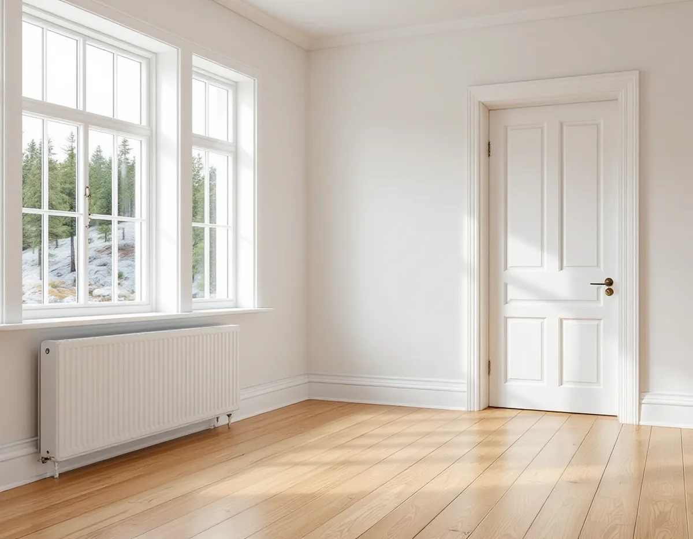
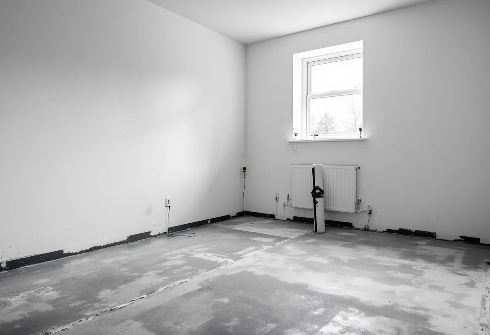

Platsbesök
Vi tittar på golven, lyfter en list och mäter fukten om golvet ligger mot mark.
En källare som ska bli sovrum eller ett gammalt trägolv i en villa från 1920-talet – båda kräver att man vet vad som finns under. Geal Entreprenad AB lägger nya golv, slipar och lagar trägolv i hela Botkyrka, från Tullinge och Tumba till Vårsta och Norsborg, med gratis platsbesök och skriftligt kostnadsförslag.

Botkyrka har 12 555 bostäder i småhus enligt SCB:s siffror för 2024. Kommunens kulturmiljöprogram berättar att AB Separator anlade ett gjuteri vid Tullingesjöns sydspets vid förra sekelskiftet, och att Tullinge järnvägsstation öppnade 1903. Det blev starten för villasamhället. Den tidiga exploateringen sköttes av Tullinge AB, som köpt mark från Tullinge gård.
Programmet beskriver villorna vid Tullingesjöns västra sida och på bergskrönet söder om järnvägen som hantverksmässigt utförda, i nationalromantisk och jugendinspirerad stil, ofta på höjder i landskapet och på stora tomter. Det är bebyggelsen från 1900–1940 som är mest kulturhistoriskt intressant i Tullinge.

På 1920-talet planlades Hamra egnahem söder om järnvägen, för tjänstemän och arbetare på Separator. Samtidigt kom kataloghusen – monteringsfärdiga enfamiljshus som köptes direkt från en husleverantör. Kulturmiljöprogrammet nämner Boros villa Björkhamra som populär i Tullinges egnahemsområde, och kataloghus från 1920- och 40-talen dominerar området.
I ett hus som är nära hundra år gammalt kan det ligga flera generationer golv ovanpå varandra. Är originalgolvet massivt trä kan det enligt Golvbranschen slipas om många gånger, så länge träet ovanför not och spår räcker. Ligger det i stället en senare parkett med tunt slitskikt är marginalen mindre – för lamellparkett är toppskiktet enligt branschens definition minst 2,5 millimeter. Vi tar reda på vilket det är innan vi föreslår slipning. Mer om golvtyper finns på sidan om golvläggning.
Har villan källare är det värt att veta hur den var tänkt. Boverket skriver att äldre hus ofta hade oisolerade och ouppvärmda källare. Ibland fanns en panna för ved, kol eller koks som värmde källaren med spillvärme, men generellt var källare kallare förr än i dag, och ventilationen i gamla källare är inte anpassad för bostadsändamål.
Ska källaren bli sovrum eller kontor är golvet ofta det svåraste. Enligt Boverket kan en betongplatta i källare fuktas upp av marken, och ett ångtätt golvmaterial som läggs på betong i kontakt med mark utan skydd mot fukttransport kan ge fuktproblem. Boverket rekommenderar att fuktförhållandena i grunden utreds vid renovering. Vi börjar därför med att mäta fukten i plattan och se hur väggarna mot mark mår innan vi föreslår ett golv.
Botkyrka kommun skriver att radon från marken är den vanligaste källan till radon i byggnader, men att även byggmaterial kan ge ifrån sig radon. Oftast är mängden för liten för att spela roll. Undantaget är blåbetong, som innehåller den uranrika bergarten alunskiffer och användes under perioden 1929–1978.
Som villaägare ansvarar du själv för att ta reda på radonhalten. Kommunen rekommenderar en mätning om ingen har gjorts tidigare, om den senaste är äldre än tio år eller om ventilation eller uppvärmning ändras. Mätningen görs mellan 1 oktober och 30 april under minst två månader, med minst två dosor och minst en per våningsplan, men inte i kök eller badrum. Görs källaren om till sovrum ska den räknas med.
Enligt kulturmiljöprogrammet lanserades Folkvillan och Tjänstemannavillan på 1950-talet. Segersjö planerades under 1940-talet på mark som kommunen köpte av Tumba pappersbruk, främst för personalen vid bruket och sanatorierna i Uttran och Tullinge. Planen omfattade ungefär 450 lägenheter, och Segersjö blev det största bostadsområdet som byggdes i kommunen under 1950-talet.
Programmet beskriver femtiotalets villor med friare planformer, stora perspektivfönster och entrédörrar i ek eller teak. I hus från den tiden är det vanligt att golven har bytts minst en gång. Vi lyfter en list och ser vad som finns under innan vi föreslår att slipa, lägga nytt ovanpå eller riva. Ska även taket ses över finns mer om takrenovering i Botkyrka.
Vi tittar på golven, lyfter en list och mäter fukten om golvet ligger mot mark.
Vi tar reda på vilka golvskikt som finns och hur mycket trä som finns kvar.
Du får ett skriftligt kostnadsförslag med slipning, lagning eller nytt golv som separata alternativ.
Rum som inte berörs skyddas mot damm och möbler flyttas undan.
Golvet slipas, lagas eller byts mot ett nytt på ett torrt och plant underlag.
Lack, olja eller såpa läggs på, och du får råd om skötsel.
Enligt Skatteverket ger slipning och byte av golv rätt till rotavdrag i ett småhus som du äger och bor i. Avdraget är 30 procent av arbetskostnaden, med ett tak på 50 000 kr per person och år och 75 000 kr för rot och rut tillsammans.
Material och resor räknas inte med. Geal gör avdraget direkt på fakturan, så du betalar bara din del.
Golvytan, antalet golvskikt som ska bort och om underlaget måste torkas eller riktas påverkar mest. Ett källargolv kräver ofta mer förarbete än ett golv i bottenvåningen. Platsbesöket är gratis och du får ett skriftligt kostnadsförslag.
Parkett, trägolv, klinker och slipning.
Golvläggning i Stockholm →Takbyte, takbesiktning och plåtarbeten.
Takläggare i Botkyrka →Tullinge, Uttran och Tumba.
Takrenovering i Botkyrka →Flytt av badrum, stammar och frånluft.
Badrumsrenovering i Botkyrka →Nytt hus, utfart och byggarbetsplats.
Byggföretag i Botkyrka →Fönstertyper per epok i Botkyrkas villor.
Fönsterbyte i Botkyrka →Kök i villor och radhus, för att bo kvar.
Köksrenovering i Botkyrka →Tidstypiska kulörer från 1960-tal till gamla byar.
Målare i Botkyrka →Rännor, stuprör och plåttak i Botkyrka.
Plåtslagare i Botkyrka →Altan, plank och förråd i villaområdena vid järnvägen.
Snickare i Botkyrka →Ny tapet på träfiberskivor och gamla lager.
Tapetsering i Botkyrka →